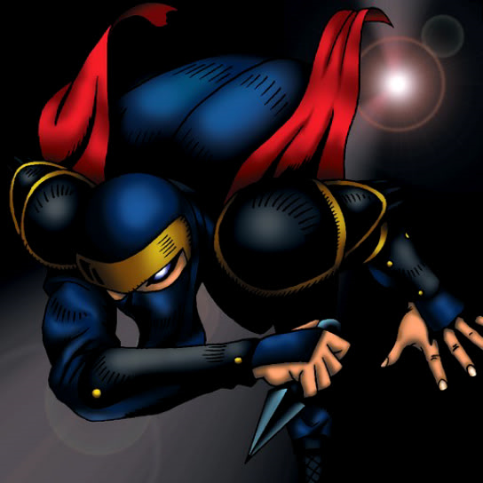

Ansatsu

STATS
ATK: 1700
DEF: 1200DECK COST
Deck Cost per Card: 29Fusion List (12 Possible Fusions)
- Ansatsu + Blackland Fire Dragon = Sword Arm of Dragon
- Ansatsu + Candle of Fate = Flame Swordsman
- Ansatsu + Crawling Dragon #2 = Sword Arm of Dragon
- Ansatsu + Dragon Zombie = Sword Arm of Dragon
- Ansatsu + Fire Eye = Flame Swordsman
- Ansatsu + Flame Snake = Flame Swordsman
- Ansatsu + Harpie Lady = Punished Eagle
- Ansatsu + Hinotama Soul = Flame Swordsman
- Ansatsu + LaMoon = Cocoon of Evolution
- Ansatsu + One-Eyed Shield Dragon = Sword Arm of Dragon
- Ansatsu + Petit Dragon = Sword Arm of Dragon
- Ansatsu + The Judgement Hand = Judge Man